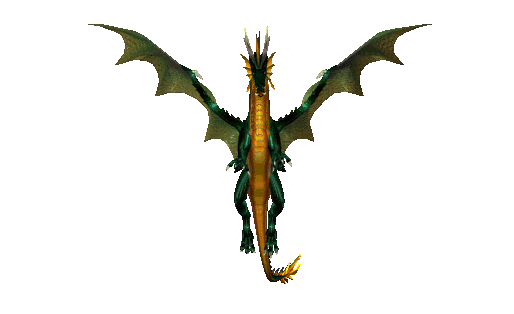

No one says, that it would be easy.
To face the rhythm of the heart, that flash and fade the stars.
The reason is not who you love.
And not to change partners for better ones.
But in that for their sake, to change for the better yourselve.
We must be ready to defend our truth.
But this mean, that entering into a duel with another truth,
We risk that this is what will change us for the better.
Not as we thought
And if you're really the one you claim to be,
You will have to enter this game ...
Everything happens by itself.
Everything happens harmoniously.
Sometimes, with a person you want to code - This is professional partnership.
Sometimes you want to talking (sometimes along the way pretty drunk) - This is friendship.
Sometimes you want to draw together, pee poems - This is creativity.
But sometimes you want to do everything with a person at once - This is...
Hack you!
this cute nice little demo is dedicated to Si.
(she is hiding among you)
created by ImpFromLiga with native JS only code,
24h non stop hacking
at HANABI HACK - Moscow 2019
Thank U 4 youre attention!
